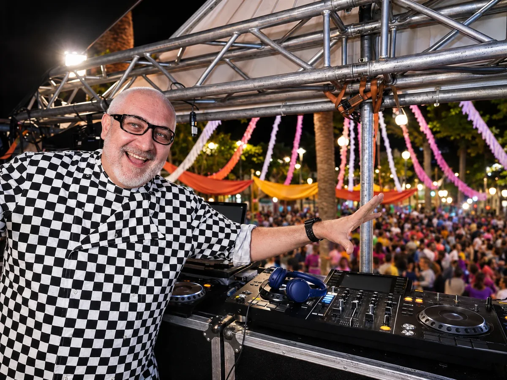
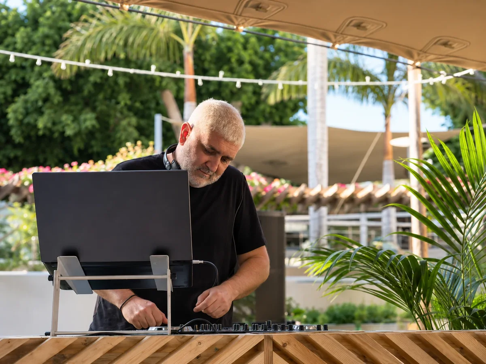

DJ · Speaker · Animador
DJ para bodas, eventos y fiestas privadas
Más de 25 años poniendo la música en celebraciones de Tenerife.
Pedir presupuestoMás de 25 años de experiencia poniendo la música en bodas, cumpleaños, cenas de empresa, fiestas privadas y fines de año.
- DJLa música de cada momento, preparada contigo.
- Speaker y animadorPresenta, anima y lleva el ritmo del evento.
- Equipo propioLleva su propio equipo de sonido.
Servicios
Qué puedo hacer por tu celebración
Bodas
Música pensada con vosotros, de la ceremonia al último baile.
Cenas y eventos de empresa
Cenas de empresa, presentaciones y fiestas, con música y presentación cuidadas.
Cumpleaños y fiestas privadas
Cumpleaños, fin de año y celebraciones en casa o en un local.
Fin de año
Para despedir el año con la música y el ambiente preparados.
Speaker y animación
Presenta, anima y mantiene el ritmo del evento cuando hace falta.
Gestión de eventos
Ayuda a organizar los tiempos para que todo salga a su hora.

Trayectoria
Toda una vida poniendo música
Rayco lleva más de 25 años como DJ. Ha puesto la música en bodas, cumpleaños, cenas de empresa, fiestas privadas y fines de año, y trabaja también como speaker y animador.
Esa experiencia es la que lleva a tu celebración: saber leer a la gente y qué canción toca en cada momento.
Conoce a RaycoTú disfrutas; de la música me ocupo yo.

Cómo trabajo
Del primer mensaje a la última canción
- Primero
Hablamos
Me cuentas qué celebras, la fecha, el lugar y cuántos invitados esperas.
- Después
Preparamos la música
Vemos juntos el estilo y las canciones que no pueden faltar.
- El día
Disfrutas la fiesta
Tú disfrutas con tus invitados; de la música y el ambiente me ocupo yo.
Preguntas frecuentes
Antes de reservar
¿Qué tipo de eventos haces?
Bodas, cumpleaños, fiestas privadas, cenas y eventos de empresa, fin de año y todo tipo de celebraciones.
¿Llevas equipo de sonido?
Sí, llevo mi propio equipo.
¿Cuánto cuesta?
Depende de la fecha, el lugar y lo que necesites. Cuéntaselo a Rayco en el formulario y te prepara el presupuesto.
¿Tenéis fecha?
Cuéntale a Rayco qué celebráis, cuándo y dónde. Te responde personalmente con tu presupuesto.
Pedir presupuesto